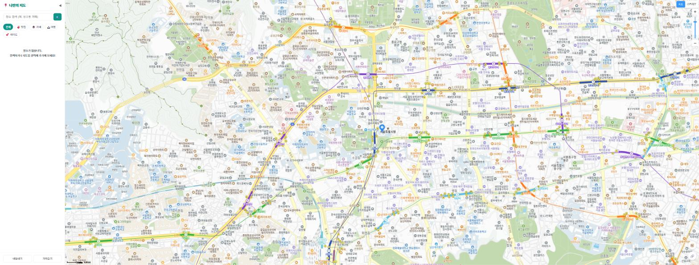
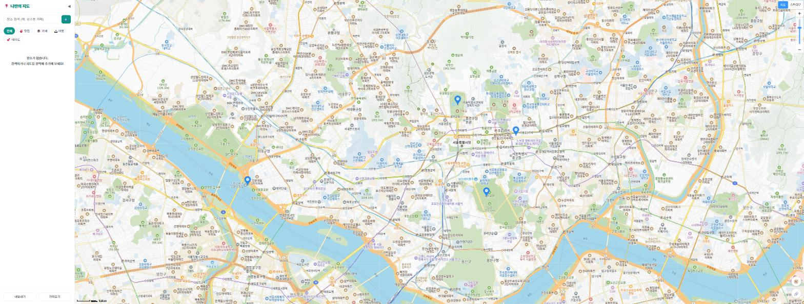
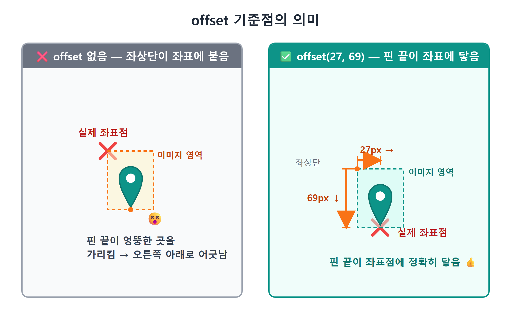
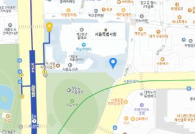
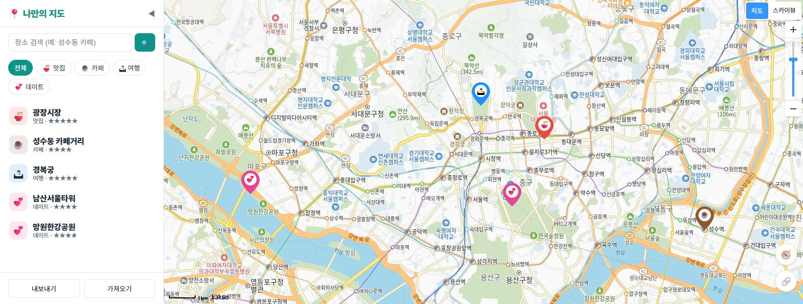
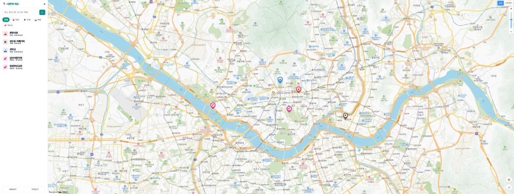

11장 마커 찍기¶
이 장에서 배우는 것
kakao.maps.Marker로 지도 위에 첫 마커를 찍습니다- 배열과 반복문으로 마커 여러 개를 한 번에 표시합니다
MarkerImage로 기본 파란 마커를 원하는 이미지로 바꿉니다- SVG와 data URI로 이미지 파일 없이 커스텀 핀을 그립니다
- 장소 배열을 받아 마커를 그려 주는
renderPlaces함수를 만듭니다
드디어 3부입니다. 9장에서 지도를 띄웠고, 10장에서 지도를 움직이고 클릭하는 법을 배웠습니다. 그런데 지금 우리 지도는 솔직히 말해 그냥 카카오맵 축소판입니다. 아직 "나만의" 지도라고 부르기엔 부족하죠. 나만의 지도가 되려면 뭐가 필요할까요? 내가 아끼는 장소들이 지도 위에 표시되어야 합니다.
지도 앱에서 특정 위치를 가리키는 뾰족한 핀, 그것이 바로 마커(Marker)입니다. 카카오맵에서 장소를 검색하면 나타나는 그 핀 말입니다. 이번 장에서는 마커 하나를 찍는 것부터 시작해서, 여러 개를 반복문으로 찍고, 마지막에는 카테고리마다 색과 이모지가 다른 우리만의 예쁜 핀까지 만들어 봅니다. 이 장이 끝나면 지도가 비로소 "내 것" 같아 보이기 시작할 겁니다.
11.1 첫 마커 하나 찍기¶
가장 작은 것부터 시작합시다. 서울 시청 위에 마커 딱 하나를 찍어 보겠습니다. 언제나처럼 코드를 직접 치는 게 아니라, Claude Code에게 시킵니다.
🗣 이렇게 시키세요
지도에 마커를 하나 찍고 싶어. 서울 시청(위도 37.5665, 경도 126.978) 위치에 카카오지도 기본 마커를 표시해줘. main.js에서 지도를 만든 다음 줄에 추가해줘.
Claude Code가 src/main.js에 몇 줄을 추가해 줍니다. 핵심만 보면 이렇습니다.
// 마커가 놓일 위치
const position = new kakao.maps.LatLng(37.5665, 126.978);
// 마커를 만들고
const marker = new kakao.maps.Marker({ position });
// 지도 위에 올린다
marker.setMap(map);
세 줄뿐이지만 한 줄씩 뜯어보겠습니다.
첫 줄은 익숙한 얼굴입니다. 9장에서 배운 LatLng, 위도와 경도를 묶어 "지도 위의 한 점"을 표현하는 객체죠. 마커는 지도 위 어딘가에 꽂혀야 하므로, 꽂을 지점부터 정의합니다.
둘째 줄이 이번 장의 주인공, kakao.maps.Marker입니다. new로 마커 객체를 하나 만들면서 설정 객체를 넘기는데, 최소한 position(어디에 꽂을지)만 있으면 마커가 만들어집니다. 지도를 만들 때 new kakao.maps.Map(container, {...}) 하던 것과 같은 패턴이죠. 카카오지도 SDK의 객체들은 대부분 이런 식으로 태어납니다.
셋째 줄 setMap(map)이 재미있는 부분입니다. 마커를 만들었다고 해서 바로 화면에 보이는 게 아닙니다. 마커는 만들어진 순간 아직 "허공"에 있습니다. setMap(map)을 호출해서 "이 지도 위에 올라가라"라고 말해 줘야 비로소 화면에 나타납니다. 압정을 산 것(생성)과 지도에 꽂은 것(setMap)이 다른 것과 같습니다.
이 구조의 좋은 점은 반대로도 된다는 것입니다. marker.setMap(null)을 호출하면 마커가 지도에서 내려옵니다. 삭제가 아니라 "잠깐 떼어 두기"에 가깝습니다. 나중에 다시 setMap(map) 하면 같은 마커가 다시 나타나죠. 이 켰다 껐다 하는 능력이 14장에서 카테고리 필터를 만들 때 결정적인 역할을 합니다. 지금은 "마커는 setMap으로 붙였다 뗐다 할 수 있다"만 기억해 두세요.
저장하고 브라우저를 확인해 봅시다. Vite 개발 서버가 켜져 있다면 저장하는 순간 화면이 자동으로 새로고침됩니다. 서울 시청 위에 파란 몸통에 뾰족한 꼬리가 달린 카카오 기본 마커가 서 있으면 성공입니다.

💡 팁
마커를 만들 때 position과 함께 map을 넘기면(new kakao.maps.Marker({ position, map })) setMap 호출 없이 곧바로 지도에 올라갑니다. 한 줄이 줄어드는 지름길이지만, 이 책에서는 setMap을 따로 쓰는 쪽을 권합니다. "만들기"와 "붙이기"를 분리해 두면 필터처럼 마커를 붙였다 떼는 기능을 만들 때 코드 흐름이 눈에 잘 들어오기 때문입니다.
11.2 마커 여러 개 — 배열과 반복문¶
마커 하나는 찍었습니다. 그런데 우리 지도에 올라갈 장소가 하나일 리 없죠. 맛집, 카페, 여행지… 수십 개는 될 겁니다. 마커 하나에 세 줄이 필요했으니 서른 개면 아흔 줄일까요? 그렇게 코드를 복사-붙여넣기 하고 있다면 뭔가 잘못된 겁니다. 프로그래밍의 오랜 격언이 있습니다. 같은 코드를 두 번 쓰고 있다면, 반복문이 필요한 순간이다.
🗣 이렇게 시키세요
마커를 여러 개 찍고 싶어. 서울의 유명한 장소 4곳(이름, 위도, 경도)을 배열로 만들고, 반복문으로 각각 마커를 찍어줘. 마커에 마우스를 올리면 장소 이름이 보이게 해줘.
Claude Code가 만들어 준 코드는 대략 이렇습니다.
const spots = [
{ name: '경복궁', lat: 37.5796, lng: 126.977 },
{ name: '남산타워', lat: 37.5512, lng: 126.9882 },
{ name: '광장시장', lat: 37.5701, lng: 126.9996 },
{ name: '한강공원', lat: 37.5285, lng: 126.9328 },
];
for (const spot of spots) {
const marker = new kakao.maps.Marker({
position: new kakao.maps.LatLng(spot.lat, spot.lng),
title: spot.name,
});
marker.setMap(map);
}
구조가 아름답습니다. 위쪽 spots는 데이터입니다. 장소 하나가 { name, lat, lng } 모양의 객체 하나이고, 그런 객체들이 배열 [ ] 안에 나란히 담겨 있습니다. 아래쪽 for...of 반복문은 동작입니다. 배열에서 장소를 하나씩 꺼내(spot) 그 좌표로 마커를 만들어 지도에 올립니다. 장소가 4개든 400개든 아래쪽 코드는 한 글자도 바뀌지 않습니다. 배열에 줄만 추가하면 마커가 늘어나죠.
새로 등장한 옵션 title도 눈여겨보세요. 마커에 마우스를 올리면 잠시 뒤 장소 이름이 작은 말풍선(브라우저 기본 툴팁)으로 나타나게 해 줍니다. HTML 태그의 title 속성과 같은 역할입니다. 화려하진 않지만 공짜로 얻는 기능이니 챙겨 둡시다. 제대로 예쁜 말풍선은 13장에서 직접 만듭니다.

여기서 잠깐, 방금 우리가 한 일의 의미를 짚고 넘어가겠습니다. 우리는 방금 "데이터와 화면을 분리"했습니다. 장소 정보는 배열에, 그리는 방법은 반복문에. 이 분리는 이 책 후반부 전체를 지탱하는 기둥입니다. 12장에서 이 배열을 제대로 된 장소 데이터 파일로 키우고, 17장에서는 localStorage에 저장하고, 사용자가 장소를 추가하면 배열에 넣고 다시 그리기만 하면 됩니다. 그리는 코드는 그대로인데 데이터만 바뀌는 구조. 오늘 그 첫 단추를 끼운 겁니다.
⚠️ 주의
마커가 안 보인다면 십중팔구 좌표 문제입니다. 위도(lat)와 경도(lng)를 서로 바꿔 넣으면 마커가 화면 밖 엉뚱한 곳(심하면 남극 근처 바다)에 찍힙니다. 한국이라면 위도는 33~38 근처, 경도는 126~131 근처의 숫자입니다. "지도는 나오는데 마커가 없어요"라면 좌표 두 숫자를 먼저 의심하세요. 지도를 한참 축소(레벨을 크게)해 보면 엉뚱한 곳에 찍힌 마커를 찾아내는 데 도움이 됩니다.
11.3 마커 이미지 바꾸기 — MarkerImage¶
기본 마커는 훌륭하지만 문제가 하나 있습니다. 전부 똑같이 생겼다는 겁니다. 맛집도 파란 핀, 카페도 파란 핀, 데이트 명소도 파란 핀. 지도만 봐서는 어떤 장소인지 구분할 방법이 없습니다. 우리 앱의 핵심 기능이 카테고리별 장소 관리인데, 이래서는 곤란하죠.
카카오지도 SDK는 마커의 생김새를 통째로 바꿀 수 있는 MarkerImage를 제공합니다. 먼저 인터넷에 있는 이미지로 시험해 봅시다.
🗣 이렇게 시키세요
마커의 기본 이미지를 다른 이미지로 바꾸는 방법을 보여줘. 카카오 공식 예제에 나오는 별 모양 마커 이미지를 써서 마커 하나만 시험 삼아 바꿔줘.
const imageSrc =
'https://t1.daumcdn.net/localimg/localimages/07/mapapikit/marker_red.png';
const imageSize = new kakao.maps.Size(64, 69);
const imageOption = { offset: new kakao.maps.Point(27, 69) };
const markerImage = new kakao.maps.MarkerImage(imageSrc, imageSize, imageOption);
const marker = new kakao.maps.Marker({
position: new kakao.maps.LatLng(37.5665, 126.978),
image: markerImage,
});
marker.setMap(map);
MarkerImage는 재료 세 가지를 받습니다.
첫째, 이미지 주소(imageSrc)입니다. 웹에서 접근 가능한 이미지 URL이면 됩니다.
둘째, 크기(Size)입니다. 이미지를 지도 위에 몇 픽셀 크기로 보여줄지 정합니다. 가로 64, 세로 69픽셀이라는 뜻입니다.
셋째가 중요합니다. offset, 우리말로 하면 "기준점"입니다. 이게 뭔지 이해하려면 질문을 하나 던져야 합니다. 마커 이미지는 가로세로가 있는 네모난 그림인데, 그 네모의 어느 지점이 좌표에 정확히 닿아야 할까요? 핀 모양 이미지라면 당연히 뾰족한 끝이 좌표를 찔러야 합니다. 이미지의 왼쪽 위 모서리가 좌표에 붙어 버리면, 핀은 실제 위치보다 오른쪽 아래를 가리키는 것처럼 보이겠죠. offset: new kakao.maps.Point(27, 69)는 "이미지의 왼쪽 위에서 오른쪽으로 27px, 아래로 69px 내려간 지점(즉 핀 끝)을 좌표에 맞춰라"라는 뜻입니다.

offset을 잘못 잡으면 이상한 일이 벌어집니다. 지도를 확대·축소할 때마다 마커가 미끄러지듯 어긋나 보이거든요. 좌표에 닿아 있는 지점이 핀 끝이 아니기 때문에, 지도가 늘어나고 줄어들 때 핀 끝이 가리키는 위치가 계속 달라지는 겁니다. 마커가 "떠다니는" 느낌이 든다면 offset부터 확인하세요.
브라우저에서 확인해 보면 파란 기본 마커 대신 별이 그려진 빨간 마커가 서 있을 겁니다. 마커의 옷을 갈아입히는 데 성공했습니다.

11.4 이미지 파일 없이 핀 그리기 — SVG와 data URI¶
남의 이미지를 빌려 쓰는 건 시험까지만입니다. 우리 앱에는 카테고리가 4개 있고(맛집·카페·여행·데이트), 카테고리마다 색이 다른 핀을 쓰고 싶습니다. 그럼 핀 이미지 4장을 그림판으로 그려서 프로젝트에 넣어야 할까요? 나중에 카테고리가 추가되면 또 그리고요?
더 우아한 방법이 있습니다. 코드로 그림을 그리는 겁니다. 여기서 두 가지 재료가 등장합니다.
첫째는 SVG1입니다. 그림을 픽셀 덩어리가 아니라 "도형을 그리는 지시문"으로 표현하는 이미지 형식입니다. "여기 핀 모양 경로를 빨간색으로 채우고, 그 위에 흰 원을 그리고, 가운데에 글자를 써라"라고 텍스트로 적으면 그게 곧 이미지가 됩니다. 텍스트이기 때문에 색이나 글자를 바꾸는 일이 문자열 치환만큼 쉽고, 아무리 확대해도 계단 현상 없이 매끈합니다.
둘째는 data URI2입니다. 조금 전 MarkerImage는 이미지 "주소"를 요구했습니다. 그런데 주소가 꼭 https://...처럼 서버를 가리켜야 하는 건 아닙니다. data:image/svg+xml;charset=utf-8,<svg...> 형식으로 이미지의 내용물 자체를 주소 자리에 밀어 넣는 문법이 있습니다. 택배에 비유하면, 물건 보관함 위치를 알려주는 대신 상자를 통째로 손에 쥐여 주는 셈이죠. 파일도, 서버 요청도 필요 없습니다.
이 둘을 합치면 "자바스크립트 문자열로 핀을 그려서 그 자리에서 마커 이미지로 쓰는" 마법이 완성됩니다. 시켜 봅시다.
🗣 이렇게 시키세요
이미지 파일 없이 SVG로 마커 핀을 그리고 싶어. 색과 이모지를 인자로 받아서, 그 색의 핀 안에 흰 원과 이모지가 들어간 MarkerImage를 돌려주는 함수 markerImageFor를 만들어줘. SVG는 data URI로 변환해서 써줘. 핀 끝이 좌표에 정확히 닿게 offset도 맞춰줘.
Claude Code가 만들어 준 함수입니다. 우리 앱 src/mapView.js에 실제로 들어 있는 코드와 뼈대가 같습니다.
function markerImageFor(emoji, color) {
const svg = `
<svg xmlns="http://www.w3.org/2000/svg" width="36" height="46" viewBox="0 0 36 46">
<path d="M18 0C8 0 0 8 0 18c0 12 18 28 18 28s18-16 18-28C36 8 28 0 18 0z" fill="${color}"/>
<circle cx="18" cy="17" r="12" fill="white"/>
<text x="18" y="22" font-size="14" text-anchor="middle">${emoji}</text>
</svg>`;
const url = 'data:image/svg+xml;charset=utf-8,' + encodeURIComponent(svg);
return new kakao.maps.MarkerImage(url, new kakao.maps.Size(36, 46), {
offset: new kakao.maps.Point(18, 46),
});
}
위에서부터 해설해 보겠습니다.
SVG 문자열. 백틱(`)으로 감싼 템플릿 문자열 안에 SVG가 통째로 들어 있습니다. 가로 36, 세로 46픽셀의 캔버스에 세 도형을 겹쳐 그립니다. <path>가 물방울을 뒤집은 듯한 핀 몸통입니다. d="M18 0C8 0..."라는 암호 같은 문자열은 "펜을 (18,0)으로 옮기고, 곡선을 그리며 내려와 (18,46)의 뾰족한 끝을 만들고 다시 올라가라"는 그리기 지시문인데, 외울 필요는 전혀 없습니다. 이런 걸 사람 대신 만들어 주는 게 AI의 특기니까요. 그다음 <circle>이 핀 안의 흰 원, <text>가 그 위에 얹히는 이모지입니다. 눈여겨볼 곳은 ${color}와 ${emoji} 두 군데입니다. 함수가 받은 인자가 문자열 속에 끼워 넣어지는 자리, 즉 핀의 색과 얼굴이 결정되는 지점입니다.
encodeURIComponent. SVG 문자열을 data URI에 넣기 전에 한 번 감싸 주는 함수입니다. URL이라는 세계에는 <, >, #, 이모지 같은 문자가 그대로 들어갈 수 없어서, 이들을 URL이 소화할 수 있는 %3C 같은 표기로 바꿔 줍니다. 일종의 포장 작업이죠. 이걸 빼먹으면 어떤 브라우저에서는 되고 어떤 브라우저에서는 마커가 안 보이는, 가장 잡기 싫은 유형의 버그가 생깁니다.
MarkerImage 조립. 마지막 return 문은 11.3절에서 배운 그대로입니다. 방금 만든 data URI를 주소로, 크기는 36×46, offset은 Point(18, 46). 가로의 정확히 절반(18)에 세로 맨 끝(46), 즉 핀의 뾰족한 끝입니다. 이제 이 함수를 한 줄로 부르면 원하는 색과 이모지의 핀이 뚝딱 나옵니다.
const marker = new kakao.maps.Marker({
position: new kakao.maps.LatLng(37.5665, 126.978),
image: markerImageFor('🍜', '#e74c3c'),
});
marker.setMap(map);
색 몇 개로 실험해 보세요. #e74c3c(빨강)는 맛집, #8e5a2d(갈색)는 카페, #1e90ff(파랑)는 여행, #e84393(분홍)은 데이트. 눈치채셨겠지만 이 색들이 12장에서 만들 카테고리 체계의 공식 색입니다.

💡 팁
SVG가 어떻게 생긴 그림인지 눈으로 확인하고 싶다면, 코드의 <svg>...</svg> 부분을 복사해 새 텍스트 파일에 붙여 넣고 pin.svg로 저장한 뒤 브라우저로 열어 보세요. 숫자를 바꿔 저장할 때마다 모양이 어떻게 변하는지 노는 것만으로 SVG와 금세 친해집니다. Claude Code에게 "핀을 더 통통하게 바꿔줘"라고 시켜 보는 것도 좋은 실험입니다.
11.5 장소 배열을 마커로 — renderPlaces 함수¶
이제 이 장의 부품들을 하나로 조립할 시간입니다. 11.2절의 "배열 → 반복문 → 마커"와 11.4절의 markerImageFor를 합쳐서, 장소 배열을 통째로 받아 지도에 그려 주는 함수 하나로 만들겠습니다.
🗣 이렇게 시키세요
지도 코드를 정리하고 싶어. src/mapView.js 파일에서, 장소 객체 배열을 받아 마커로 그려 주는 renderPlaces 함수를 만들어줘. 다시 호출하면 기존 마커를 모두 지우고 새로 그려야 해. 마커 이미지는 아까 만든 markerImageFor를 써줘.
let markers = [];
export function renderPlaces(places) {
// 1) 기존 마커를 모두 지도에서 내린다
for (const marker of markers) marker.setMap(null);
markers = [];
// 2) 받은 장소마다 마커를 만들어 올린다
for (const place of places) {
const marker = new kakao.maps.Marker({
position: new kakao.maps.LatLng(place.lat, place.lng),
image: markerImageFor(place.emoji, place.color),
title: place.name,
});
marker.setMap(map);
markers.push(marker);
}
}
이 함수의 영혼은 "지우고 다시 그린다"에 있습니다. 함수 첫머리에서 기존 마커를 전부 setMap(null)로 내리고 배열을 비운 다음, 받은 장소들로 처음부터 다시 그립니다. "기존 마커 중에 뭐가 바뀌었는지 찾아서 그것만 고치면 더 효율적이지 않나?"라는 생각이 들 수 있습니다. 맞는 말이지만, 그 "찾아서 고치기"가 바로 버그의 온상입니다. 우리 규모(장소 수십~수백 개)에서는 전부 지우고 다시 그려도 눈 깜짝할 사이에 끝나므로, 단순하고 틀릴 수 없는 쪽을 택합니다. 화면은 언제나 데이터를 다시 그린 결과라는 이 원칙은 14장 필터에서 진가를 발휘합니다. 필터가 바뀌면? 걸러낸 배열로 renderPlaces를 다시 부르면 끝이거든요.
그러려면 지운다는 것이 가능해야 하고, 그래서 모듈 맨 위의 let markers = []가 필요합니다. 만든 마커들을 배열에 차곡차곡 담아 두지 않으면(마지막 줄 markers.push(marker)), 다음번에 지우고 싶어도 잡을 손잡이가 없습니다. 지도에 올려놓기만 하고 참조를 버린 마커는 우리 손을 떠난 압정과 같습니다.
이제 사용하는 쪽(main.js)은 이렇게 단순해집니다.
import { renderPlaces } from './mapView.js';
renderPlaces([
{ name: '광장시장 육회골목', lat: 37.5701, lng: 126.9996, emoji: '🍜', color: '#e74c3c' },
{ name: '연남동 소금빵집', lat: 37.5606, lng: 126.9256, emoji: '☕', color: '#8e5a2d' },
{ name: '남산타워 전망대', lat: 37.5512, lng: 126.9882, emoji: '💕', color: '#e84393' },
]);

한 가지 고백할 것이 있습니다. 완성된 앱의 mapView.js를 열어 보면 renderPlaces가 이보다 조금 더 깁니다. 장소마다 이모지·색을 들고 다니는 대신 place.category 하나만 적으면 색과 이모지가 자동으로 정해지고(12장), 마커를 클릭하면 말풍선이 열리고(13장), 마커가 아주 많아지면 자동으로 뭉쳐집니다(22장). 하지만 뼈대는 오늘 만든 이 모습 그대로입니다. 앞으로의 장들은 이 뼈대에 살을 붙이는 과정입니다.
⚠️ 주의
renderPlaces를 여러 번 호출했더니 마커가 자꾸 겹쳐 쌓인다면, 함수 첫머리의 "기존 마커 지우기"가 빠졌거나 markers 배열이 함수 안에 선언되어 있는 경우입니다. markers는 반드시 함수 밖에 있어야 호출과 호출 사이에 살아남아 이전 마커들을 기억할 수 있습니다. Claude Code가 만든 코드가 이상하게 동작하면 "renderPlaces를 두 번 부르면 마커가 겹치는 것 같아. 원인 찾아서 고쳐줘"라고 증상을 그대로 말해 주세요.
11.6 마무리¶
지도 위에 우리의 흔적을 남기기 시작했습니다. 마커 하나에서 출발해 배열과 반복문, 이미지 교체, 코드로 그리는 SVG 핀, 그리고 데이터를 화면으로 바꿔 주는 renderPlaces까지. 특히 "데이터 따로, 그리기 따로"와 "지우고 다시 그린다"라는 두 원칙은 이 앱이 끝날 때까지 계속 만나게 될 친구들이니 꼭 챙겨 가세요.
📌 핵심 요약
- 마커는
new kakao.maps.Marker({ position })로 만들고setMap(map)으로 지도에 올립니다.setMap(null)이면 내려옵니다. - 마커 여러 개는 장소 배열(데이터)과 반복문(그리기)으로 분리해 처리합니다. 데이터가 늘어도 그리는 코드는 그대로입니다.
MarkerImage(주소, Size, { offset })로 마커의 생김새를 바꿉니다.offset은 이미지의 어느 지점을 좌표에 맞출지 정하는 기준점으로, 핀이라면 뾰족한 끝이어야 합니다.- SVG(텍스트로 그리는 그림) + data URI(내용물을 주소 자리에 넣는 문법) +
encodeURIComponent(URL용 포장)를 조합하면 이미지 파일 없이 커스텀 핀을 만들 수 있습니다. renderPlaces는 기존 마커를 전부 지우고 배열을 처음부터 다시 그립니다. 단순함이 곧 버그 없는 길입니다.
🤔 생각해보기
Q1. markerImageFor의 offset이 Point(18, 46)이 아니라 Point(0, 0)이라면, 지도를 확대·축소할 때 마커가 어떻게 보일까요? 이유와 함께 적어 보세요.
✍️ ________
✍️ ________
Q2. renderPlaces가 "바뀐 마커만 고치기" 대신 "전부 지우고 다시 그리기"를 택한 이유는 무엇이었나요? 어떤 상황이 오면 이 선택을 다시 고민해야 할까요?
✍️ ________
✍️ ________
✏️ 연습 문제
- 여러분이 실제로 좋아하는 장소 3곳의 좌표를 찾아
spots배열에 넣고 마커를 찍어 보세요. (좌표는 10장에서 만든 "클릭하면 콘솔에 좌표 찍기"를 활용하면 됩니다.) - Claude Code에게 시켜
markerImageFor의 핀 크기를 36×46에서 48×60으로 키워 보세요. offset의 두 숫자는 각각 얼마로 바뀌어야 할까요? 먼저 예상한 뒤 결과와 비교해 보세요. - 새 카테고리 "🏃 운동"을 상상하고 어울리는 색을 골라
markerImageFor('🏃', '#??????')로 핀을 만들어 지도에 찍어 보세요. renderPlaces를 빈 배열[]로 호출하면 어떻게 될지 예상해 보고, 실제로 실행해 확인해 보세요.
🔎 더 찾아보기
kakao.maps.MarkerImage spriteOrigin— 여러 마커 그림을 한 장의 이미지(스프라이트)에 모아 두고 잘라 쓰는 기법SVG path 문법—d속성의 M·C·L 명령으로 곡선과 직선을 그리는 규칙Base64 data URI— 텍스트가 아닌 이미지(PNG 등)를 data URI로 만들 때 쓰는 인코딩marker.setDraggable— 사용자가 마커를 드래그해 옮길 수 있게 하는 옵션
다음 장 예고 — 이번 장 끝에서 장소 하나가 이모지와 색까지 직접 들고 다니는 게 조금 무거워 보였을 겁니다. 12장에서는 장소 데이터를 제대로 설계합니다. 장소에는
category이름표 하나만 붙이고, 카테고리의 색·이모지·라벨은categories.js한 곳에서 관리하는 구조로 바꿉니다. id, 별점, 메모까지 갖춘 장소 스키마를 정의하고 나면, 우리 지도는 진짜 "데이터로 움직이는 앱"이 됩니다.